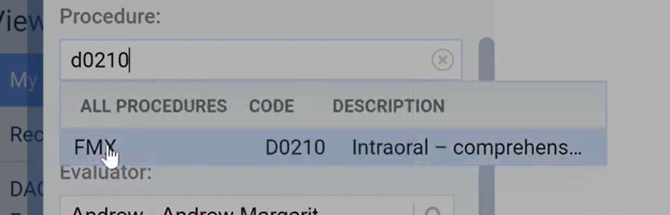
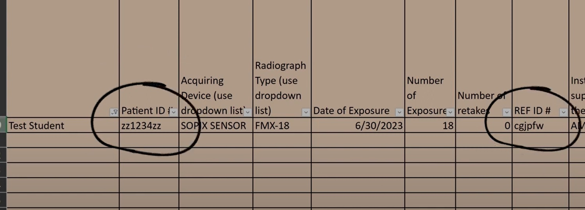
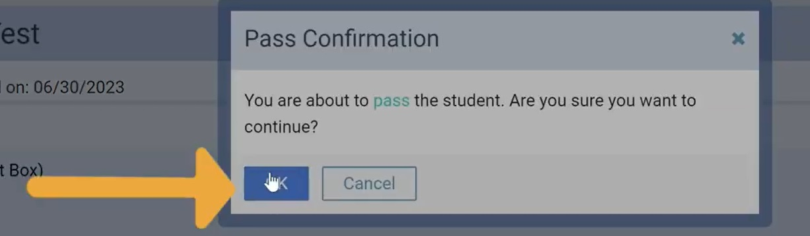

Initial Faculty Tutorial
-
Step 1:
- 1. Navigate to Ascend Academic.
- 2. Select the drop down labeled Academic.
- 3. Select Faculty Evaluations from the drop down.
-
Step 2:
- 1. Select Create New Evaluation in the upper right.
- 2. Select competency from the drop-down menu.
-
Step 3:
- 1. In the 'Student' section please type out and select the appropriate student.
-
Step 4:
- 1. Type in the appropriate procedure code to connect to the evaluation be it for FMX, BWX, VBWX, Pano, etc.

-
Step 5:
- 1. In the 'Pick a Form' section type out REF and select the appropriate form for grading.
- 2. Select the Create button for the form to be created.
-
Step 6:
- 1. Take note and write down the REF-FMX evaluation ID to be able to give to the student.
- 2. Select 'Start' on the right side of that form.
-
Step 7:
- 1. Make sure to fill out sections 1,2 and 4-6 as needed (Form Dependant).
- 2. Take special note of the FMX form, question 2 declares whether or not the BWX can stand alone.
-
Step 8:
- 1. After filling out the appropriate heading sections please hit Save and Exit, NOT submit.
- 2. Again, make sure the student is given the appropriate REF Evaluation ID to fill out for Teams.
|
Student Grading Tutorial
-
Step 1:
- 1. Navigate teams to the Radiograph Exposure-Prescription Dispensed Logs.
- 2. Fill out all of the relevant information including the IDs that were given to you.
- 3. Take special note of the REF ID.

-
Step 2:
- 1. Navigate back to Ascend Academic.
- 2. Select the blue Evaluations block on the right side of the home screen.
-
Step 3:
- 1. Take note of the appropriate Evaluation ID and then select 'Start' under 'Self Evaluation'.
-
Step 4:
- 1. Follow the step by step form to grade your radiographic series. Do note that you will be unable to see anything the faculty has written.
- 2. Make sure nothing is left blank, fill out each comment box and remember to use "None", "NSF", etc if needed.
- 3. Submit the Self Evaluation.
-
Step 5:
- 1. Navigate back to teams in the Radiograph Exposure-Precription Dispensed Logs.
- 1. Fill out the sections at the end and make sure you REF is graded within a week of exposure for full credit.
|
Grading Faculty Tutorial
-
Step 1:
- 1. Navigate teams to the Radiograph Exposure-Prescription Dispensed Logs.
- 2. Filter the logs down to the student that you're looking for.
- 3. Take note of the Patient ID and the REF ID.
-
Step 2:
- 1. Navigate back to Ascend Academic.
- 2. Select the Academic drop down menu and select Faculty Evaluations.
-
Step 3:
- 1. In the upper left put in the exact date of the REF Evaluation or a date range that it would fall into.
-
Step 4:
- 1. In the 'Views' section, select DACC Dental Hygiene Pending Evaluations.
-
Step 5:
- 1. In the Student List section type out the correct student for selection.
-
Step 6:
- 1. Compare form ID numbers to make sure you have the correct one selected.
- 2. Select Resume or Start on the right hand side.
-
Step 7:
- 1. In this are you should be able to see and compare all inputs from previous faculty and students alike to compare and contrast.
- 2. Grade the entire form like normal, check the comments and leave new ones as needed.
-
Step 8:
- 1. Do not forget to calculate and input the students grade for the evaluation.
- 2. [(Total Questions - Missed Points) / (Total Questions)] * 100
- 3. Ex. [(190-10) / (190)] * 100 = 94.7%
-
Step 9:
- 1. After complete hit the SUBMIT button at the bottom left of the evaluation form.
- 2. Click OK on the popup, the score is written but ignore the pass/fail.

-
Step 10:
- 1. Navigate back to the Radiograph Exposure-Prescription Dispensed Logs.
- 2. Fill out the Date Graded/Faculty Initials and the Verified Dental chart after everything is completed and close out of teams.
|